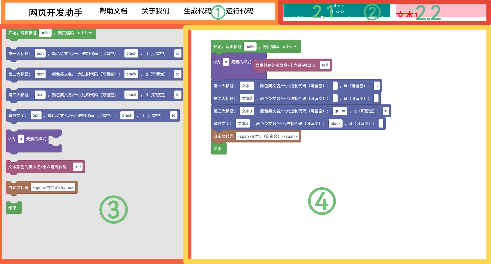

帮助文档
看看上面这张图片，然后咱们来详细介绍每个区域
①区域：导航栏，有很多选项，“帮助文档”里面有各种教程和介绍，“关于我们”里面有“网页开发助手”的简介，
“生成代码”点击后会 展开/收起 “代码生成区”，“运行代码”点击后会 展开/收起 “效果预览区”
②区域：2.1是“代码生成区”，用于 查看、复制 代码，2.2是“效果预览区”，用于实时查看代码运行效果
“代码生成区”可以通过点击“生成代码”按钮来 展开/收起，也可以点击露出来的小部分来 展开/收缩
“效果预览区”可以通过点击“运行代码”按钮来 展开/收起，也可以点击露出来的小部分来 展开/收缩
③区域：积木盒子区，里面有很多积木给你选择，你可以用鼠标（移动设备用手指）拖拽积木到“积木编辑区”，然后开始编辑
④区域：积木编辑区，用于编辑积木

上面是“代码生成区”和“效果预览区”展开后的效果
如果要删除积木，可以把积木拖拽到“积木盒子区”，然后松开鼠标（移动设备就放开手指），就可以删除了